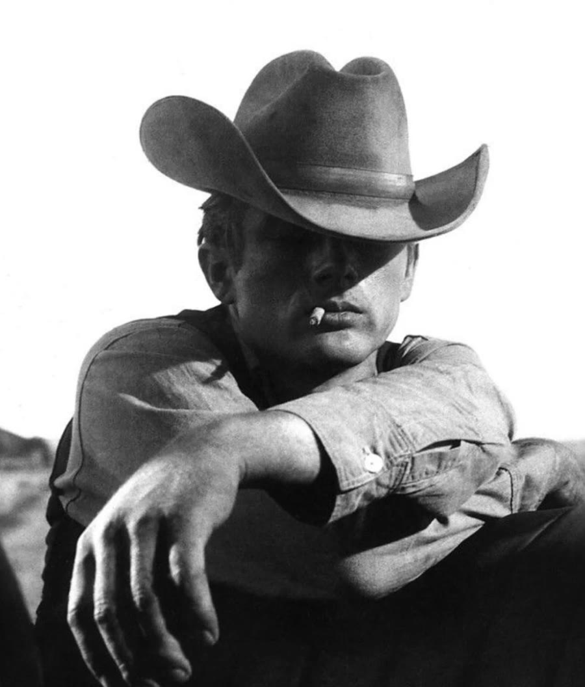
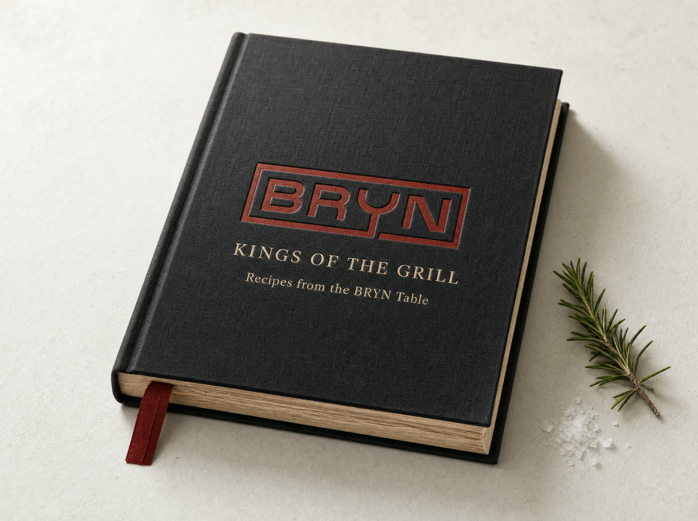
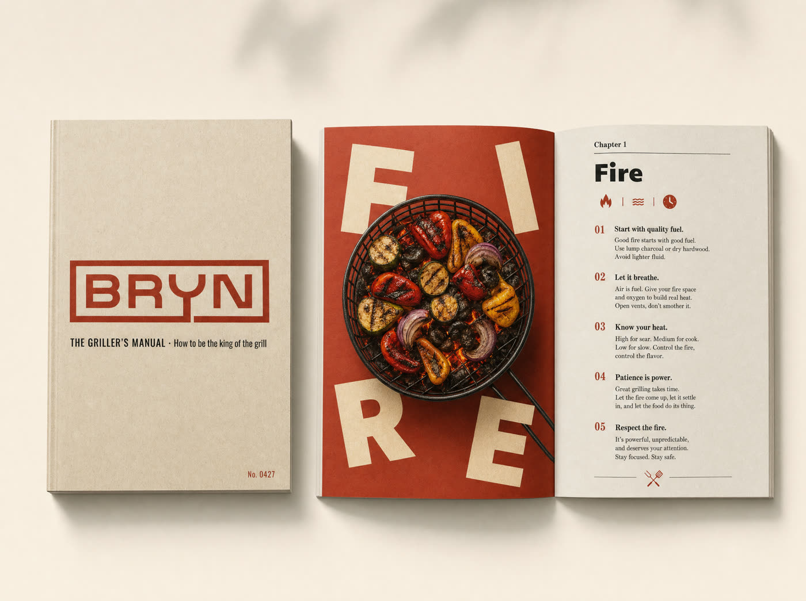
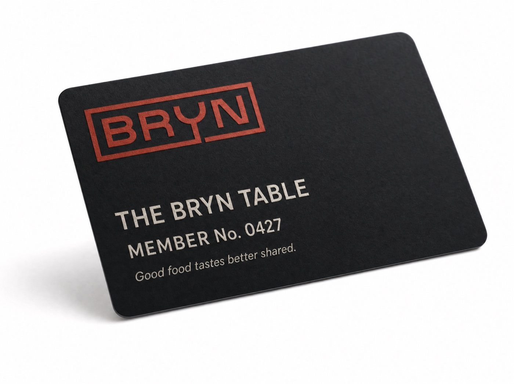
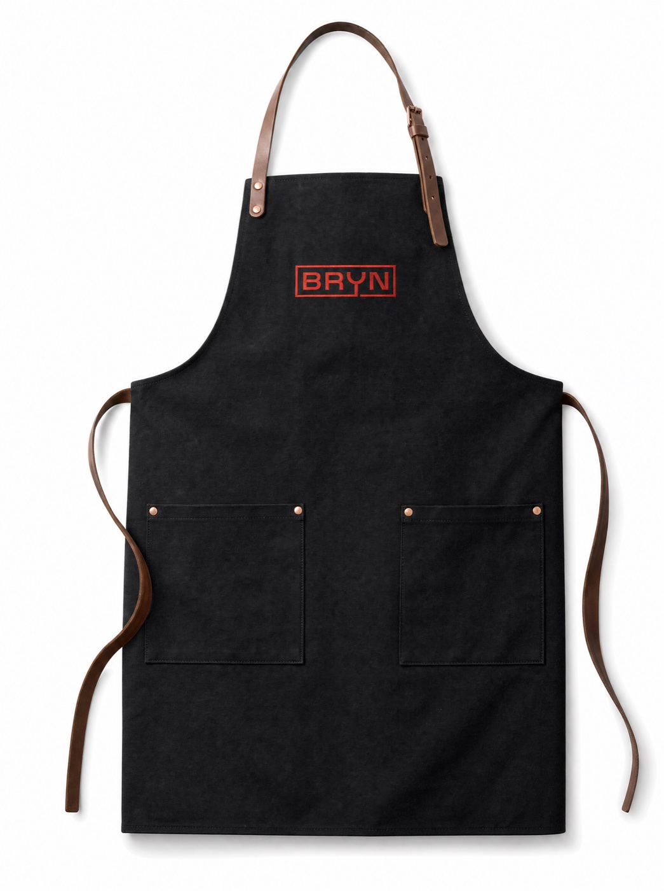
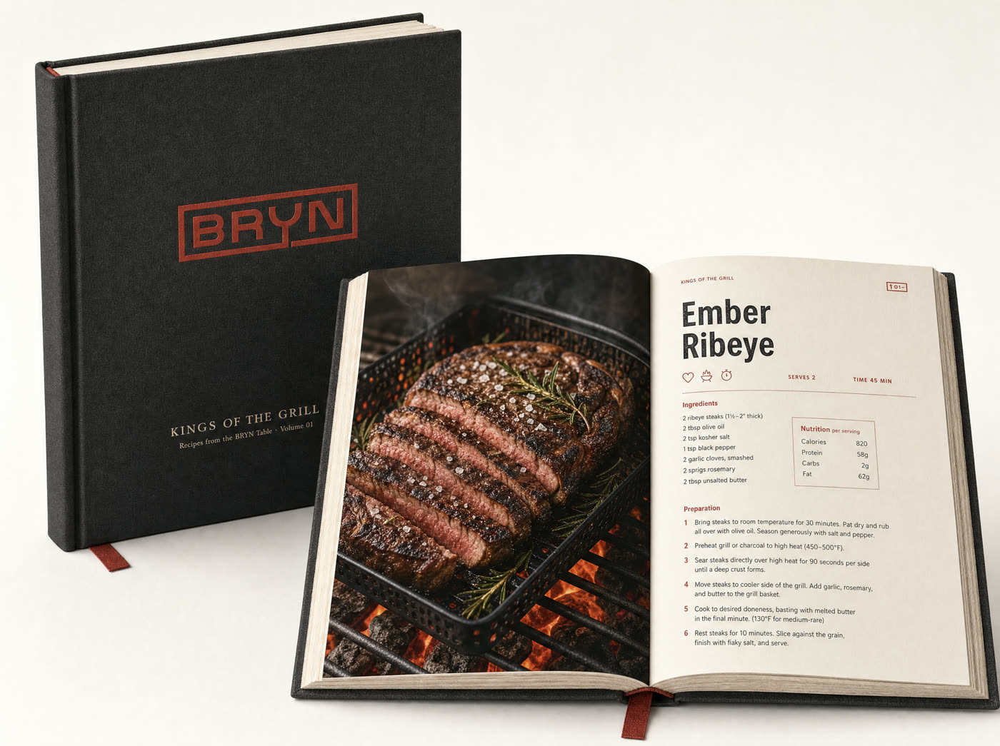
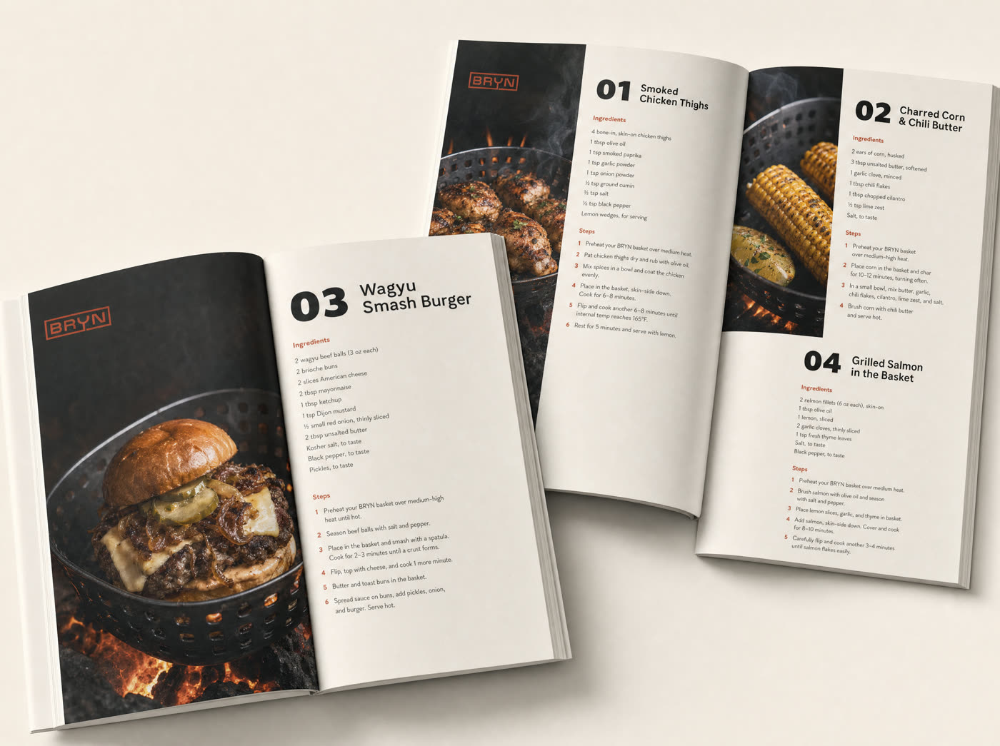
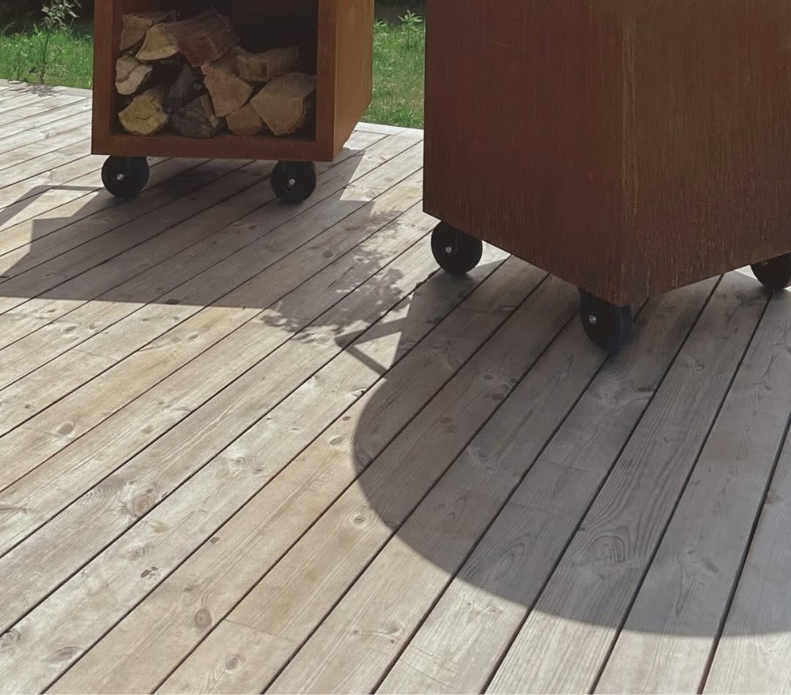

Made for the moments that matter.Hecho para los momentos que importan.Gjord för stunderna som betyder något.Good food tastes better shared.La buena comida sabe mejor compartida.God mat smakar bättre när den delas.
We read what BRYN’s customers say, what they feel and who they buy for. This proposal is built on that: one central idea, a community around it, and a team that runs all of it for three months.Leímos lo que dicen los clientes de BRYN, lo que sienten y para quién compran. Esta propuesta nace de ahí: una idea central, una comunidad alrededor y un equipo que se encarga de todo durante tres meses.Vi läste vad BRYNs kunder säger, vad de känner och vem de köper för. Förslaget bygger på det: en central idé, en community runt den och ett team som sköter allt i tre månader.
We read bryngrill.com, the four testimonials on the Rolling Basket page and BRYN’s public reviews on Trustpilot. The website sells ease and price. The people sell something else.Leímos bryngrill.com, los cuatro testimonios de la página del Rolling Basket y las reseñas públicas de BRYN en Trustpilot. La web vende facilidad y precio. La gente vende otra cosa.Vi läste bryngrill.com, de fyra omdömena på Rolling Basket-sidan och BRYNs offentliga recensioner på Trustpilot. Webbplatsen säljer enkelhet och pris. Människorna säljer något annat.
★★★★★★★★★★
3.2/ 5
232 reviews on Trustpilot232 reseñas en Trustpilot232 recensioner på Trustpilot
In short: people love the flavour and the service, and they’re let down by quality, packaging and trust. Half love it, half don’t.En resumen: a la gente le encanta el sabor y el servicio, y se decepciona por la calidad, el empaque y la confianza. La mitad la ama, la otra mitad no.Kort sagt: folk älskar smaken och servicen, och blir besvikna på kvalitet, förpackning och förtroende. Hälften älskar den, hälften inte.
The 3 reasons people buyLas 3 razones por las que compranDe 3 skälen till att folk köper
1
It tastes grilledSabe a parrillaDet smakar grillat
Smoke and flame get through. Foil, mats and pans don’t do that.El humo y la llama pasan. El aluminio, las mallas y la sartén no.Rök och låga kommer igenom. Folie, grillmattor och stekpannor gör inte det.
“The food just tastes grilled now instead of steamed.”
2
It’s easyEs fácilDet är enkelt
Nothing falls through, no skill needed, dishwasher-safe.Nada se cae, no hace falta técnica, va al lavavajillas.Inget faller igenom, ingen teknik krävs, tål diskmaskin.
“…makes everyday grilling much easier for us.”
3
The gift he usesEl regalo que él sí usaPresenten han använder
Bought for the person who grills, and actually used every weekend.Se compra para quien asa, y de verdad se usa cada fin de semana.Köpt till den som grillar, och används faktiskt varje helg.
“…the one thing he actually uses, every weekend.”
Mind map · what people feelMapa mental · lo que siente la genteTankekarta · vad folk känner
Three feelings to grow. Three to fix.Tres emociones para crecer. Tres para corregir.Tre känslor att växa. Tre att rätta till.
← Swipe to see the full map →← Desliza para ver el mapa completo →← Svep för att se hela kartan →
She buys. He grills. Everyone eats.Ella compra. Él asa. Todos comen.Hon köper. Han grillar. Alla äter.
About three in four Trustpilot reviewers are women, going by first names, and many buy BRYN as a gift for the partner who grills. The main markets in the reviews are Australia, New Zealand, the US, Canada and the Nordics.Cerca de 3 de cada 4 reseñas en Trustpilot son de mujeres, según los nombres, y muchas compran BRYN de regalo para la pareja que asa. Los mercados principales en las reseñas son Australia, Nueva Zelanda, EE. UU., Canadá y los países nórdicos.Ungefär tre av fyra som recenserar på Trustpilot är kvinnor, utifrån förnamnen, och många köper BRYN som present till partnern som grillar. De största marknaderna i recensionerna är Australien, Nya Zeeland, USA, Kanada och Norden.
What this means: BRYN has to speak to the person who cooks and to the person who chooses. The three things to fix are perception problems, and branding is how we change them: how BRYN looks, arrives, sounds and gathers people.Qué significa: BRYN tiene que hablarle a quien cocina y a quien elige. Las tres cosas por corregir son problemas de percepción, y el branding es como las cambiamos: cómo se ve BRYN, cómo llega, cómo habla y cómo reúne a la gente.Vad det betyder: BRYN måste tala både till den som lagar maten och till den som väljer. De tre sakerna att rätta till är problem med uppfattningen, och varumärket är hur vi ändrar dem: hur BRYN ser ut, kommer fram, låter och samlar människor.
Gender is an estimate from reviewer first names, not a survey.El género es un estimado según los nombres, no una encuesta.Könet är en uppskattning utifrån förnamn, inte en undersökning.
Three to fix. Fixed through branding.Tres por corregir. Corregidas con branding.Tre att rätta till. Rättas genom varumärket.
The doubts in the reviews are about perception. Branding moves that perception, and it moves people into a community: packaging that arrives like a gift, an honest Nordic story, a club with its own number and rituals. Nobody buys Gymshark, SKIMS or Snow for the factory. They buy the feeling of being part of something.Las dudas de las reseñas son de percepción. El branding mueve esa percepción, y mueve a la gente hacia una comunidad: un empaque que llega como un regalo, una historia nórdica honesta, un club con su propio número y sus rituales. Nadie compra Gymshark, SKIMS o Snow por la fábrica. Compran la sensación de ser parte de algo.Tvivlen i recensionerna handlar om uppfattning. Varumärkesarbetet flyttar den uppfattningen, och det flyttar människor in i en community: en förpackning som kommer som en present, en ärlig nordisk berättelse, en klubb med eget nummer och egna ritualer. Ingen köper Gymshark, SKIMS eller Snow för fabrikens skull. De köper känslan av att vara en del av något.
Mind map · how branding answers each doubtMapa mental · cómo el branding responde a cada dudaTankekarta · hur varumärket svarar på varje tvivel
← Swipe to see the full map →← Desliza para ver el mapa completo →← Svep för att se hela kartan →
02 · The central axis02 · El eje central02 · Den centrala axeln
Made for the moments that matter.Hecho para los momentos que importan.Gjord för stunderna som betyder något.Good food tastes better shared.La buena comida sabe mejor compartida.God mat smakar bättre när den delas.
Everything starts from the food, and from who you share it with. Every post, email, drop and product idea has to fit in this sentence.Todo nace de la comida, y de con quién la compartes. Cada post, correo, lanzamiento e idea de producto tiene que caber en esta frase.Allt börjar i maten, och i vem du delar den med. Varje inlägg, mejl, släpp och produktidé måste rymmas i den här meningen.
Reviews sayLas reseñas dicenRecensionerna sägerIt tastes grilledSabe a parrillaDet smakar grillat→ Good food→ La buena comida→ God mat
Reviews sayLas reseñas dicenRecensionerna sägerI bought it for himLo compré para élJag köpte den till honom→ Tastes better shared→ Sabe mejor compartida→ Smakar bättre när den delas
Reviews sayLas reseñas dicenRecensionerna sägerEvery weekendCada fin de semanaVarje helg→ The moments that matter→ Los momentos que importan→ Stunderna som betyder något
Mind map · one world to talk aboutMapa mental · un solo mundo del que hablarTankekarta · en värld att prata om
Six branches. Always the same table.Seis ramas. Siempre la misma mesa.Sex grenar. Alltid samma bord.
← Swipe to see the full map →← Desliza para ver el mapa completo →← Svep för att se hela kartan →
03 · Community and communication03 · Comunidad y comunicación03 · Community och kommunikation
Different categories, the same pattern: real people first, a moment to gather around, and a reason to come back. What each one did, and the one thing BRYN takes from it.Categorías distintas, el mismo patrón: primero la gente real, un momento para reunirse y una razón para volver. Lo que hizo cada una, y lo único que BRYN toma de ella.Olika kategorier, samma mönster: riktiga människor först, en stund att samlas kring och ett skäl att komma tillbaka. Vad var och en gjorde, och det enda BRYN tar med sig.
SupplementsSuplementosKosttillskott
Sends product to thousands of creators every month and gives them creative freedom. Most of the marketing budget goes to creators, not ads, and the founder still shows up on camera.Envía producto a miles de creadores cada mes y les da libertad creativa. La mayor parte del presupuesto va a creadores, no a anuncios, y la fundadora sigue apareciendo en cámara.Skickar produkter till tusentals kreatörer varje månad och ger dem kreativ frihet. Största delen av marknadsbudgeten går till kreatörer, inte annonser, och grundaren syns fortfarande framför kameran.
BRYN takesBRYN tomaBRYN tar med sigA steady seeding program with real grillers, who say it their own way.Un programa constante de envíos a asadores reales, que lo cuentan a su manera.Ett stadigt utskicksprogram till riktiga grillare, som säger det på sitt eget sätt.
ActivewearRopa deportivaTräningskläder
Built a family of athletes who live the product, a yearly challenge (#Gymshark66) that fills feeds with member stories, meetups, and an insiders group that gives feedback on new products.Creó una familia de atletas que viven el producto, un reto anual (#Gymshark66) que llena el feed de historias de miembros, encuentros en persona y un grupo de insiders que opina sobre los productos nuevos.Byggde en familj av atleter som lever produkten, en årlig utmaning (#Gymshark66) som fyller flödena med medlemmarnas historier, träffar och en insider-grupp som ger feedback på nya produkter.
BRYN takesBRYN tomaBRYN tar med sigA seasonal grill challenge and an insiders group that helps shape new products.Un reto de parrilla por temporada y un grupo de insiders que ayuda a crear productos nuevos.En grillutmaning varje säsong och en insider-grupp som hjälper till att forma nya produkter.
FashionModaMode
Launched with real women instead of models and grew through waitlists and drops. People felt seen first, then wanted to be part of it.Lanzó con mujeres reales en lugar de modelos y creció con listas de espera y lanzamientos. La gente primero se sintió vista, después quiso ser parte.Lanserade med riktiga kvinnor i stället för modeller och växte genom väntelistor och släpp. Folk kände sig sedda först, sedan ville de vara med.
BRYN takesBRYN tomaBRYN tar med sigReal families as the faces of the brand, and limited drops for the community.Familias reales como la cara de la marca, y lanzamientos limitados para la comunidad.Riktiga familjer som varumärkets ansikten, och begränsade släpp för communityn.
StreetwearStreetwearStreetwear
Justin Bieber’s label. Little advertising, the founder wears it first, and it shows up where culture already gathers: a Coachella space and pop-ups in Tokyo and New York.La marca de Justin Bieber. Poca publicidad, el fundador la usa primero, y aparece donde la cultura ya se reúne: un espacio en Coachella y pop-ups en Tokio y Nueva York.Justin Biebers märke. Lite reklam, grundaren bär det först, och det dyker upp där kulturen redan samlas: en plats på Coachella och pop-ups i Tokyo och New York.
BRYN takesBRYN tomaBRYN tar med sigShow up where people already gather to grill, and make merch people want to wear.Estar donde la gente ya se reúne a asar, y hacer merch que la gente quiera usar.Finnas där folk redan samlas för att grilla, och göra merch som folk vill bära.
Teeth whiteningBlanqueamiento dentalTandblekning
The founder called early customers to learn why they bought, improved the product with it, and turned happy customers into the brand’s influencers before scaling paid ads.El fundador llamaba a los primeros clientes para entender por qué compraban, mejoró el producto con eso y convirtió a los clientes felices en los influencers de la marca antes de escalar con anuncios.Grundaren ringde de första kunderna för att förstå varför de köpte, förbättrade produkten med det och gjorde nöjda kunder till varumärkets influencers innan betalda annonser skalades upp.
BRYN takesBRYN tomaBRYN tar med sigListen first, fix what customers point out, then let them tell the story.Escuchar primero, corregir lo que señalan los clientes, y luego dejar que ellos cuenten la historia.Lyssna först, rätta till det kunderna påpekar, och låt sedan dem berätta historien.
EarplugsTapones auditivosÖronproppar
Sells a moment, not a spec: “without missing the moment”. A long free trial lowers the risk, and merch carries the brand from the product into daily life.Vende un momento, no una ficha técnica: “sin perderte el momento”. Una prueba gratis larga baja el riesgo, y el merch lleva la marca del producto a la vida diaria.Säljer en stund, inte en specifikation: ”utan att missa stunden”. En lång gratis provperiod sänker risken, och merch tar märket från produkten in i vardagen.
BRYN takesBRYN tomaBRYN tar med sigLead with the moment people share, and back it with a promise they can trust.Abrir con el momento que la gente comparte, y respaldarlo con una promesa en la que puedan confiar.Öppna med stunden folk delar, och backa upp den med ett löfte de kan lita på.
Based on public reporting and the brands’ own pages; some figures in those sources are secondary and not verified by us.Basado en notas públicas y en las páginas de las marcas; algunas cifras de esas fuentes son secundarias y no las verificamos.Baserat på offentlig rapportering och märkenas egna sidor; vissa siffror i källorna är sekundära och inte verifierade av oss.
Mind map · the community systemMapa mental · el sistema de comunidadTankekarta · communitysystemet
The BRYN Table: a place people belong toLa Mesa BRYN: un lugar al que la gente perteneceBRYN-bordet: en plats man hör till
← Swipe to see the full map →← Desliza para ver el mapa completo →← Svep för att se hela kartan →
How BRYN talks · four rules for unityCómo habla BRYN · cuatro reglas de unidadHur BRYN talar · fyra regler för samhörighet
We, not INosotros, no yoVi, inte jagBRYN talks like a host at the table, never like a seller.BRYN habla como el anfitrión de la mesa, nunca como un vendedor.BRYN talar som en värd vid bordet, aldrig som en säljare.
Show the tableMostrar la mesaVisa bordetPeople and food first. The basket is there, never the hero.Primero la gente y la comida. La canasta está, pero no es la protagonista.Människor och mat först. Korgen finns där, men är aldrig huvudpersonen.
Real people firstGente real primeroRiktiga människor förstCustomers and creators who use it. AI is a tool, not the face.Clientes y creadores que lo usan. La IA es una herramienta, no la cara.Kunder och kreatörer som använder den. AI är ett verktyg, inte ansiktet.
Listen in publicEscuchar en públicoLyssna öppetReply, feature, and fix what people point out, out loud.Responder, destacar y corregir lo que la gente señala, en voz alta.Svara, lyft fram och rätta till det folk påpekar, högt.
04 · How the content gets made04 · Cómo se hace el contenido04 · Hur innehållet skapas
Real people. A little magic.Gente real. Un poco de magia.Riktiga människor. Lite magi.
Mood reference · the BRYN character will be originalReferencia de estilo · el personaje BRYN será originalStilreferens · BRYN-karaktären blir original

The BRYN CowboyEl Vaquero BRYNBRYN-cowboyen
A fictional character, not the brandUn personaje ficticio, no la marcaEn fiktiv karaktär, inte varumärket
The cowboy is a recurring character for special moments: a seasonal story, a launch, a joke the community shares. He feeds his people, says little and never uses foil. Real families stay the face of BRYN.El vaquero es un personaje recurrente para momentos especiales: una historia de temporada, un lanzamiento, un chiste que la comunidad comparte. Alimenta a los suyos, habla poco y nunca usa papel aluminio. Las familias reales siguen siendo la cara de BRYN.Cowboyen är en återkommande karaktär för speciella stunder: en säsongsberättelse, en lansering, ett skämt communityn delar. Han ger sina människor mat, säger lite och använder aldrig folie. Riktiga familjer förblir BRYNs ansikte.
Dose: about 1 in 8 postsDosis: cerca de 1 de cada 8 postsDos: ungefär 1 av 8 inlägg
01He appears for moments, not every week.Aparece en momentos, no todas las semanas.Han dyker upp i stunder, inte varje vecka.
02He’s someone he wants to become and she likes at her table.Es alguien en quien él quiere convertirse y que a ella le gusta en su mesa.Han är någon han vill bli och någon hon gillar vid sitt bord.
03He never replaces a real customer in a review or result.Nunca reemplaza a un cliente real en una reseña o un resultado.Han ersätter aldrig en riktig kund i en recension eller ett resultat.
Let’s talk about thisPara hablarlo juntosLåt oss prata om det här
Creator StrategiesEstrategias con creadoresKreatörsstrategier
With the example of HappyFlopsCon el ejemplo de HappyFlopsMed HappyFlops som exempel
The goal is real testimonials: people showing why the basket is good and how it feels to be part of something. In the HappyFlops example, one simple video with a real customer is filmed once and then recycled with AI into new styles, keeping the script that already works. For BRYN: real grillers who use the basket, honest base videos, and AI versions to test what connects.La meta son testimonios reales: gente que muestra por qué la canasta es buena y cómo se siente ser parte de algo. En el ejemplo de HappyFlops, un video simple con una clienta real se graba una vez y luego se recicla con IA en nuevos estilos, manteniendo el guion que ya funciona. Para BRYN: asadores reales que usan la canasta, videos base honestos y versiones con IA para probar qué conecta.Målet är riktiga omdömen: människor som visar varför korgen är bra och hur det känns att vara en del av något. I HappyFlops-exemplet filmas en enkel video med en riktig kund en gång och återanvänds sedan med AI i nya stilar, med samma manus som redan fungerar. För BRYN: riktiga grillare som använder korgen, ärliga basvideor och AI-versioner för att testa vad som når fram.
01FindEncontrarHittaCustomers and creators who already use BRYN.Clientes y creadores que ya usan BRYN.Kunder och kreatörer som redan använder BRYN.
02FilmGrabarFilmaOne honest base video at their table.Un video base honesto en su mesa.En ärlig basvideo vid deras bord.
03 · AIRecycleReciclarÅteranvändSame script, new worlds and styles.Mismo guion, nuevos mundos y estilos.Samma manus, nya världar och stilar.
04TestProbarTestaOrganic and paid, side by side.Orgánico y pauta, lado a lado.Organiskt och betalt, sida vid sida.
05ScaleEscalarSkalaMore of what people share.Más de lo que la gente comparte.Mer av det folk delar.
06Give backDevolverGe tillbakaFeature the families who made it.Destacar a las familias que lo hicieron.Lyft fram familjerna som gjorde det.
Which customers would BRYN love to see on camera first?¿A qué clientes le encantaría a BRYN ver primero en cámara?Vilka kunder skulle BRYN helst vilja se framför kameran först?
How much AI feels right for BRYN: a little, or a signature style?¿Cuánta IA se siente bien para BRYN: un poco, o un estilo propio?Hur mycket AI känns rätt för BRYN: lite, eller en egen stil?
Can we send baskets to creators every month, like Bloom does?¿Podemos enviar canastas a creadores cada mes, como hace Bloom?Kan vi skicka korgar till kreatörer varje månad, som Bloom gör?
05 · Creative ways to belong05 · Formas creativas de pertenecer05 · Kreativa sätt att höra till
Things people can hold on toCosas a las que la gente se aferraSaker folk kan hålla fast vid
Ideas that change how people see BRYN and how they act with it. Each one gives a reason to stay, to share and to come back, and quietly answers the doubts from the reviews.Ideas para cambiar cómo la gente ve a BRYN y cómo actúa con ella. Cada una da una razón para quedarse, compartir y volver, y responde en silencio a las dudas de las reseñas.Idéer som ändrar hur folk ser på BRYN och hur de agerar med märket. Var och en ger ett skäl att stanna, dela och komma tillbaka, och svarar i tysthet på tvivlen i recensionerna.
← Swipe to see the full map →← Desliza para ver el mapa completo →← Svep för att se hela kartan →

Kings of the GrillKings of the GrillKings of the GrillA living recipe book, online first: recipes made in your BRYN basket, written with the community. Each recipe shows the basket working hard, night after night, so durability is proven, not promised. It can grow into a printed edition.Un recetario vivo, primero online: recetas hechas en tu canasta BRYN, escritas con la comunidad. Cada receta muestra la canasta trabajando noche tras noche, así la durabilidad se demuestra, no se promete. Puede crecer hasta una edición impresa.En levande receptbok, online först: recept gjorda i din BRYN-korg, skrivna tillsammans med communityn. Varje recept visar korgen i hårt arbete, kväll efter kväll, så hållbarheten bevisas i stället för att utlovas. Den kan växa till en tryckt utgåva.

The Griller’s ManualEl manual del asadorThe Griller’s ManualHow to be the king of the grill: fire, timing, the table, the rules of the house. Short chapters that become social content, and a gift that comes with the club.Cómo ser el rey de la parrilla: el fuego, los tiempos, la mesa, las reglas de la casa. Capítulos cortos que se vuelven contenido para redes, y un regalo que viene con el club.Hur man blir grillens kung: elden, tiderna, bordet, husets regler. Korta kapitel som blir innehåll i sociala medier, och en present som följer med klubben.

Member No. 0427Miembro No. 0427Medlem nr 0427Every person gets a number in the online club. It turns a purchase into a membership.Cada persona recibe un número en el club online. Convierte una compra en una membresía.Varje person får ett nummer i onlineklubben. Det gör ett köp till ett medlemskap.

The black apronEl delantal negroDet svarta förklädetRandom prizes for members who post their table. People wear the club.Premios al azar para los miembros que publican su mesa. La gente lleva puesto el club.Slumpvisa priser till medlemmar som lägger upp sitt bord. Folk bär klubben.Knife giveawaysSorteos de cuchillosKnivutlottningarA monthly giveaway for the community: a reason to stay close.Un sorteo mensual para la comunidad: una razón para quedarse cerca.En månatlig utlottning för communityn: ett skäl att hålla sig nära.

Inside the bookPor dentro del libroInuti bokenOne recipe, one photo, one basket. Elegant like a cookbook, honest like a grill.Una receta, una foto, una canasta. Elegante como un libro de cocina, honesto como una parrilla.Ett recept, ett foto, en korg. Elegant som en kokbok, ärlig som en grill.

The catalogEl catálogoKatalogenNumbered recipes that double as a product catalog: every dish shows which BRYN basket made it.Recetas numeradas que también funcionan como catálogo: cada plato muestra qué canasta BRYN lo hizo.Numrerade recept som också fungerar som produktkatalog: varje rätt visar vilken BRYN-korg som gjorde den.
Concept visuals for the proposal, not finished products.Visuales de concepto para la propuesta, no productos terminados.Konceptbilder för förslaget, inte färdiga produkter.
06 · Credibility through partnerships06 · Credibilidad con alianzas06 · Trovärdighet genom partnerskap
Proof from people who cook for a livingPruebas de gente que vive de cocinarBevis från folk som lagar mat på riktigt
Customer reviews build trust. Chef reviews build authority. Respected chefs cook with BRYN in real kitchens and say what they think, on camera and in their own words. That is the strongest answer to “a similar one costs $14”.Las reseñas de clientes construyen confianza. Las de chefs construyen autoridad. Chefs respetados cocinan con BRYN en cocinas reales y dicen lo que piensan, en cámara y con sus palabras. Esa es la respuesta más fuerte a “una parecida cuesta $14”.Kundrecensioner bygger förtroende. Kockars recensioner bygger auktoritet. Respekterade kockar lagar mat med BRYN i riktiga kök och säger vad de tycker, på kamera och med egna ord. Det är det starkaste svaret på ”en liknande kostar 14 dollar”.
24KfollowersseguidoresföljareAmsterdam · EuropeEuropaEuropaLive fire · big cutsFuego vivo · cortes grandesÖppen eld · stora styckdetaljer
A chef known in Amsterdam and across Europe for fire, big cuts and food served as a show. The first chef of the BRYN Table.Un chef conocido en Ámsterdam y en toda Europa por el fuego, los cortes grandes y la comida servida como espectáculo. El primer chef de la BRYN Table.En kock känd i Amsterdam och i hela Europa för eld, stora styckdetaljer och mat som serveras som en show. Den första kocken vid BRYN Table.
01Cooking samples with BRYN baskets in his kitchen.Muestras de cocina con canastas BRYN en su cocina.Matlagningsprov med BRYN-korgar i hans kök.
02Recipe videos for the sales funnel: hook, cook, result.Videos de recetas para el embudo de venta: gancho, cocción, resultado.Receptvideor för säljtratten: krok, tillagning, resultat.
03His honest review, in his own words.Su reseña honesta, con sus propias palabras.Hans ärliga recension, med egna ord.
04A signature recipe in Kings of the Grill.Una receta firmada en Kings of the Grill.Ett signaturrecept i Kings of the Grill.
05A BRYN Table dinner in Amsterdam.Una cena BRYN Table en Ámsterdam.En BRYN Table-middag i Amsterdam.
Chef Maya at workChef Maya en acciónChef Maya i arbeteTomahawk as edible art. This is the level BRYN sits next to.El tomahawk como arte comestible. Este es el nivel junto al que se sienta BRYN.Tomahawk som ätbar konst. Det är den nivån BRYN ställer sig bredvid.Instagram ↗The kind of collabEl tipo de collabTypen av samarbeteThe product at the center of the cook, shown working. A similar grill demo reached 124K likes.El producto en el centro de la cocción, mostrando cómo funciona. Una demo parecida llegó a 124K likes.Produkten i centrum av tillagningen, i arbete. En liknande grilldemo fick 124K gilla-markeringar.Instagram ↗

Separate proposal · Identity ratificationPropuesta aparte · Ratificación de identidadSeparat förslag · Bekräftelse av identiteten07 · A global movement07 · Un movimiento global07 · En global rörelse
Not a basket. A way of grilling.No es una canasta. Es una forma de asar.Inte en korg. Ett sätt att grilla.
Grilling is one of the oldest things families share, on every continent. Grill restaurants around the world cook with BRYN, recommend it and let us film it. When a pitmaster in Texas and a yakiniku chef in Tokyo use the same basket, owning a BRYN means being part of something big.Asar es una de las cosas más antiguas que comparten las familias, en todos los continentes. Restaurantes de parrilla de todo el mundo cocinan con BRYN, lo recomiendan y nos dejan grabarlo. Cuando un pitmaster en Texas y un chef de yakiniku en Tokio usan la misma canasta, tener una BRYN es ser parte de algo grande.Att grilla är en av de äldsta sakerna familjer delar, på varje kontinent. Grillrestauranger runt om i världen lagar mat med BRYN, rekommenderar den och låter oss filma. När en pitmaster i Texas och en yakiniku-kock i Tokyo använder samma korg betyder en BRYN att vara del av något stort.
Background: reference post byFondo: post de referencia deBakgrund: referensinlägg av@byggeligt.home ↗
TexasAmerican BBQPitmasters, brisket and ribs. The basket handles the sides.Pitmasters, brisket y costillas. La canasta se encarga de los acompañantes.Pitmasters, brisket och revben. Korgen tar hand om tillbehören.
SydneyAussie barbecueThe backyard barbie: snags, prawns, lamb chops.La barbacoa del patio: salchichas, langostinos, chuletas de cordero.Bakgårdsgrillen: korv, räkor, lammkotletter.
TokyoWagyu · yakinikuPrecision over charcoal. Wagyu that never falls through.Precisión sobre carbón. Wagyu que nunca se cae.Precision över kol. Wagyu som aldrig ramlar igenom.
Buenos AiresAsadoThe asador, the fire, the long Sunday table.El asador, el fuego, la larga mesa del domingo.Asadorn, elden, det långa söndagsbordet.
SeoulK-BBQGrill at the table. Everyone cooks, everyone eats.Parrilla en la mesa. Todos cocinan, todos comen.Grill vid bordet. Alla lagar, alla äter.
Cape TownBraaiA whole country around the fire.Un país entero alrededor del fuego.Ett helt land runt elden.
Top of funnelArriba del embudoToppen av trattenA restaurant recommends itUn restaurante la recomiendaEn restaurang rekommenderar den
MiddleMedioMittenThe chef shows howEl chef muestra cómoKocken visar hur
BottomAbajoBottenA family does it at homeUna familia lo hace en casaEn familj gör det hemma
Every visit gives short videos for each stage of the BRYN sales funnel.Cada visita da videos cortos para cada etapa del embudo de venta de BRYN.Varje besök ger korta videor för varje steg i BRYNs säljtratt.
Map · BRYN on tables around the worldMapa · BRYN en mesas de todo el mundoKarta · BRYN vid bord runt om i världen
In kitchens and backyards everywhere.En cocinas y patios de todo el mundo.I kök och trädgårdar överallt.
Alliances with chefs, restaurants and club members in new markets, so BRYN reads as a global brand: present in the kitchens and backyards of families around the world. Not only the basket, but this way of grilling and the people who belong to the club.Alianzas con chefs, restaurantes y miembros del club en nuevos mercados, para que BRYN se lea como una marca global: presente en las cocinas y los patios de familias de todo el mundo. No solo la canasta, sino esta forma de asar y la gente que pertenece al club.Allianser med kockar, restauranger och klubbmedlemmar på nya marknader, så att BRYN uppfattas som ett globalt varumärke: närvarande i kök och trädgårdar hos familjer runt om i världen. Inte bara korgen, utan det här sättet att grilla och människorna som hör till klubben.
Where BRYN customers grill todayDonde los clientes de BRYN asan hoyDär BRYNs kunder grillar i dagAmsterdam · Chef Maya, conversations startedÁmsterdam · Chef Maya, conversaciones iniciadasAmsterdam · Chef Maya, samtal påbörjadeNext alliances: chefs, restaurants, club membersPróximas alianzas: chefs, restaurantes, miembros del clubNästa allianser: kockar, restauranger, klubbmedlemmar
Today’s markets come from the countries in BRYN’s public reviews.Los mercados de hoy salen de los países en las reseñas públicas de BRYN.Dagens marknader kommer från länderna i BRYNs offentliga recensioner.
08 · The Refine08 · El ajuste08 · Finjusteringen
A small fix. A bigger brand.Un ajuste pequeño. Una marca más grande.En liten justering. Ett större varumärke.
BRYN does not need a new logo. It already has its best asset: the Y is a fork. The refine is more perception than visuals: one simple mark people remember, trust and want to own.BRYN no necesita un logo nuevo. Ya tiene su mejor activo: la Y es un tenedor. El ajuste es más de percepción que visual: una marca simple que la gente recuerda, en la que confía y que quiere tener.BRYN behöver ingen ny logotyp. Den har redan sin bästa tillgång: Y:et är en gaffel. Justeringen handlar mer om uppfattning än om det visuella: ett enkelt märke som folk minns, litar på och vill äga.
TodayHoyI dagThe full logoEl logo completoHela logotypenStays as the signature. Nothing people know is lost.Se queda como firma. No se pierde nada de lo que la gente ya conoce.Blir kvar som signatur. Inget folk känner igen försvinner.
→
The markLa marcaMärketThe fork, aloneEl tenedor, soloGaffeln, ensamThe Y becomes the symbol: icon, stamp, pin, seal.La Y se vuelve el símbolo: ícono, sello, pin, estampa.Y:et blir symbolen: ikon, stämpel, nål, sigill.
→
No. 0427
In useEn usoI brukOne mark everywhereUna marca en todoEtt märke överalltApp icon, club seal, map pin, branding iron on the steak.Ícono de app, sello del club, pin del mapa, hierro de marcar sobre la carne.Appikon, klubbsigill, kartnål, brännjärn på köttet.
01Fewer colors, more confidence: BRYN red, charcoal and bone, used with discipline.Menos colores, más seguridad: rojo BRYN, carbón y hueso, usados con disciplina.Färre färger, mer självförtroende: BRYN-rött, kol och benvitt, använt med disciplin.
02From “a basket from an online shop” to “a brand with a seal”.De “una canasta de una tienda online” a “una marca con sello”.Från ”en korg från en webbutik” till ”ett varumärke med sigill”.
03The same mark on packaging, the club, the book and the map, so every touch adds up.La misma marca en el empaque, el club, el libro y el mapa, para que cada contacto sume.Samma märke på förpackningen, klubben, boken och kartan, så att varje kontakt bygger vidare.
Concept direction, to refine together with BRYN.Dirección de concepto, para ajustar junto con BRYN.Konceptriktning, att finjustera tillsammans med BRYN.
09 · Three months to build a world09 · Tres meses para crear un mundo09 · Tre månader för att bygga en värld
A world with fans. People who belong.Un mundo con fans. Gente que pertenece.En värld med fans. Människor som hör till.
Phase 1 is social media, and its job is to carry the community and the emotion. Everything it builds opens the next doors.La fase 1 son las redes sociales, y su tarea es transmitir la comunidad y la emoción. Todo lo que construye abre las siguientes puertas.Fas 1 är sociala medier, och dess uppgift är att bära communityn och känslan. Allt den bygger öppnar nästa dörrar.
MONTH 1MES 1MÅNAD 1
Listen & buildEscuchar y construirLyssna & bygg
The axis, the voice and the look, agreed togetherEl eje, la voz y el look, acordados juntosAxeln, rösten och looken, beslutade tillsammans
Review and comment listening, every weekEscucha de reseñas y comentarios, cada semanaLyssning på recensioner och kommentarer, varje vecka
First real grillers found and filmedPrimeros asadores reales encontrados y grabadosDe första riktiga grillarna hittade och filmade
First series live on socialPrimeras series al aire en redesDe första serierna ute i sociala medier
MONTH 2MES 2MÅNAD 2
GatherReunirSamla
The BRYN Table opens: #BRYNTABLEAbre la Mesa BRYN: #BRYNTABLEBRYN-bordet öppnar: #BRYNTABLE
UGC + AI recycling runningUGC + reciclaje con IA funcionandoUGC + AI-återanvändning igång
The Grill Letter, issue 1The Grill Letter, número 1The Grill Letter, nummer 1
First cowboy momentPrimer momento del vaqueroCowboyens första stund
MONTH 3MES 3MÅNAD 3
GrowCrecerVäx
Scale what people share mostEscalar lo que la gente más comparteSkala det folk delar mest
First community challengePrimer reto de comunidadFörsta community-utmaningen
Merch and drop test with membersPrueba de merch y drop con miembrosTest av merch och släpp med medlemmar
Phase 2 plan built from the dataPlan de fase 2 hecho con los datosPlan för fas 2 byggd på datan
Mind map · where Phase 1 leadsMapa mental · hacia dónde lleva la fase 1Tankekarta · vart fas 1 leder
Social first. Then the whole world around BRYN.Primero redes. Luego todo el mundo alrededor de BRYN.Sociala medier först. Sedan hela världen runt BRYN.
← Swipe to see the full map →← Desliza para ver el mapa completo →← Svep för att se hela kartan →
10 · What BRYN gets10 · Lo que BRYN logra10 · Vad BRYN får
From a product to a brand that lasts.De un producto a una marca que trasciende.Från en produkt till ett varumärke som består.
This project gives BRYN what a discount can’t: a brand people recognize, a community that grows, and a system built to scale for years.Este proyecto le da a BRYN lo que un descuento no puede: una marca que la gente reconoce, una comunidad que crece sola y un sistema hecho para escalar a largo plazo.Projektet ger BRYN det en rabatt inte kan: ett varumärke folk känner igen, en community som växer och ett system byggt för att skala i flera år.
ScaleEscalarSkalaGrowth that doesn’t depend on the next sale.Crecimiento que no depende de la próxima rebaja.Tillväxt som inte hänger på nästa rea.
Seen as a brandPercibida como marcaUppfattas som ett varumärkeNot a basket people buy, a name people trust.No una canasta que se compra, un nombre en el que se confía.Inte en korg folk köper, ett namn folk litar på.
CommunityComunidadCommunityPeople who belong, post and come back.Gente que pertenece, publica y vuelve.Människor som hör till, delar och kommer tillbaka.
ScalableEscalableSkalbartOne axis that works on every channel.Un eje que funciona en cada canal.En axel som fungerar i varje kanal.
Long termLargo plazoLångsiktigtFoundations that keep working after month 3.Bases que siguen funcionando después del mes 3.En grund som fortsätter fungera efter månad 3.
A brand that transcendsUna marca que trasciendeEtt varumärke som växer bortom produktenFrom the grill to the table, merch, email and new products.De la parrilla a la mesa, el merch, el email y productos nuevos.Från grillen till bordet, merch, mejl och nya produkter.
✓
A creative teamUn equipo creativoEtt kreativt teamStrategy, creative direction, content and community, on one central axis.Estrategia, dirección creativa, contenido y comunidad, sobre un eje central.Strategi, kreativ ledning, innehåll och community, på en central axel.
✓
A call every two weeksUna llamada quincenalEtt samtal varannan veckaA creative call with Camilo Vegga, creative director of CREATV MYNDZ.Una llamada creativa con Camilo Vegga, director creativo de CREATV MYNDZ.Ett kreativt samtal med Camilo Vegga, kreativ chef på CREATV MYNDZ.
✓
Direct contactContacto directoDirektkontaktA direct line to the creative team, whenever BRYN needs it.Una línea directa con el equipo creativo, cuando BRYN lo necesite.En direktlinje till det kreativa teamet, när BRYN behöver det.
✓
Creative work in every areaIntervención creativa en cada áreaKreativt arbete inom varje områdeBuilt to scale: social media, email marketing, all graphics and the website.Pensada para escalar: redes sociales, email marketing, toda la parte gráfica y la página web.Byggt för att skala: sociala medier, e-postmarknadsföring, all grafik och webbplatsen.
$30,000 USD
The project · execution period of 3 monthsEl proyecto · plazo de ejecución de 3 mesesProjektet · genomförandetid 3 månader
Ad spend not included.No incluye inversión en pauta.Annonsbudget ingår inte.
$7,000 USD / monthUSD / mesUSD / månad
After: creative direction and creative partnershipDespués: dirección creativa y acompañamiento creativoDärefter: kreativ ledning och kreativt partnerskap
Social media, internal and external teams, stakeholders.Redes sociales, equipos internos y externos, stakeholders.Sociala medier, interna och externa team, intressenter.
Good food tastes better shared.La buena comida sabe mejor compartida.God mat smakar bättre när den delas.Made for the moments that matter.Hecho para los momentos que importan.Gjord för stunderna som betyder något.